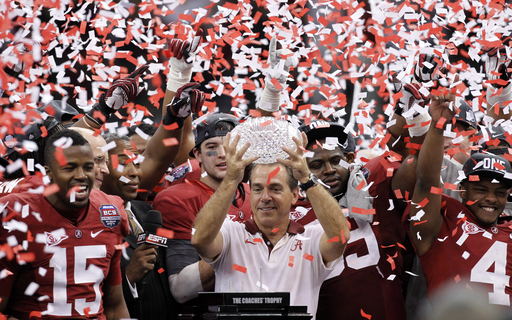

Latest News

Nick Saban Discusses Game Strategies
Read more about Coach Saban’s strategy for the upcoming season.

Jalen Milroe Shines in Practice
The quarterback showcases his skills ahead of the season opener.
The Ultimate Alabama Football Fan Hub
Read more about Coach Saban’s strategy for the upcoming season.
The quarterback showcases his skills ahead of the season opener.